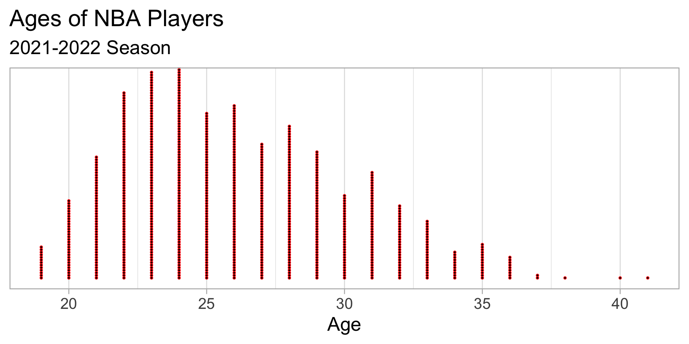
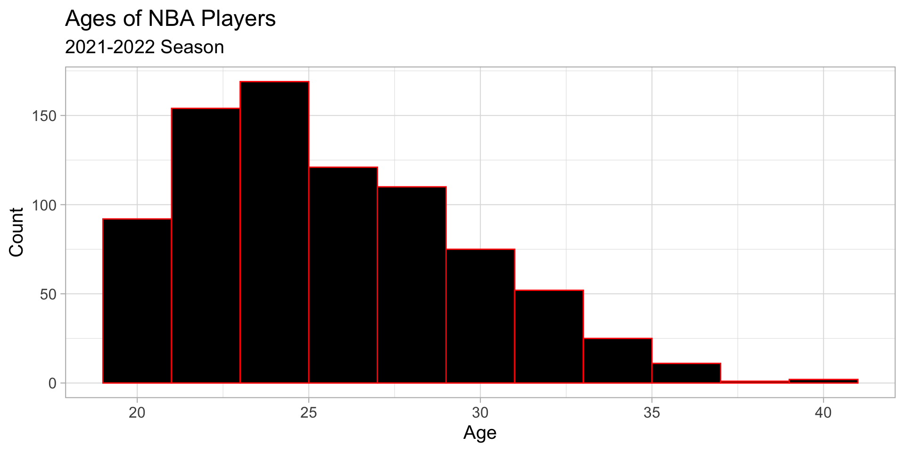
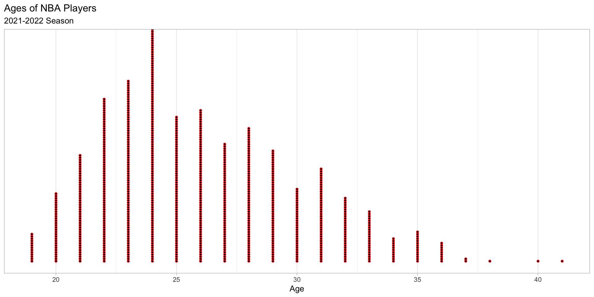
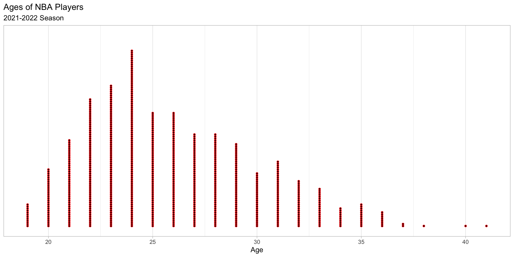

Descriptive Statistics: Part 1
STAT 20 UC Berkeley
First Things First
Lab Update
Lab 1 deadline moved to Tuesday, June 28 at 11:59pm
Lab 2 deadline remains Sunday, July 3 at 11:59pm
Clarification of Submission Format
At this point in class, we went over a demo of how we expect labs to be submitted. This was first done in RStudio, and then in Gradescope.
The main points are that:
labs must be knitted from .Rmd directly to .pdf. This means we do not want people knitting to .html and converting to .pdf.
answers must be tagged to their corresponding pages of your submission completely and correctly.
Clarification of Submission Format
For the second lab, we will have two additional questions, each worth one point, which verify that you have done these two steps.
We will also be contacting those who have collaborated with others and have not written their acknowledgement sentences as stated on the course syllabus starting from the second lab forward.
Office Hours
Office hours begin today!
Great resource to visit if you need any help with the course content or just want to chat about your academic career and interests, etc.
All in-person office hours currently in Evans 323.
Ed
Now on the Ed dates is a schedule of staff dates for manning the forum
We will check in periodically throughout the day
Recap
The Four Types of Claim
Descriptive
Generalizations
Causal
Predictive
The Four Types of Claim
- This week we will be focusing on Descriptive Claims!
Descriptive Claims
Descriptive Claims
Descriptive Claims generally focus around claims made either with summary statistics or graphics of data.
They are important because oftentimes they serve as a first step toward making the other three types of claim we will study
Today we will begin focusing on descriptive claims
- Particularly, we will look at using numerical data
Descriptive Claims
There are two types of summary:
Graphical
Numerical
Regardless of type, each type of summary has a case when it should be used.
- We call the qualities that we want out of a particular summary the desiderata.
It’s just like before
- Remember last week, we noted that:
The exact question you want to answer completely determines what your data set will look like.
- When it comes to picking a summary tool, we have a similar story:
The composition of your data set and the variables within it should help guide what summary tool you should use.

NBA Champions
The Golden State Warriors just won their fourth NBA championship in seven years!
In honor of this accomplishment, we will be using a dataset from the 2021-2022 NBA season which compiles player statistics per game throughout the week.
The unit of observation is a player.
The dataset comes from Basketball Reference and can be found here.
Summaries of Numerical Data
Graphical Summaries of Numerical Data
Graphical Summaries of Numerical Data
Dot plot
Histogram
Box plot
Dot plot
Used for: One numerical variable
Desiderata: We want to show all of the data on a visualization, that is, every observation.
Dot plot
- Example:
Visualize the ages of NBA players in the 2021-2022 season.
Dot plot
Visualize the ages of NBA players in the 2021-2022 season.
- There are a lot of observations, so I had to make the dots small.
Dot plot
- With so many observations, this might be a difficult visualization to truly sink one’s teeth into. Therefore, is there an alternative which compromises completeness but is easier to interpret and still gives the shape of the distribution?
Histogram
Used for: One numerical variable
Desiderata: We still want to show the general shape of the distribution but we are not concerned with plotting every point
The histogram groups observations into bins of equal size
- It then counts the number of observations per bin
The histogram is generally used over the dot plot
Histogram
- Example:
Visualize the ages of NBA players in the 2021-2022 season.

Histogram

Much easier to make sense of.
Yet, there are some points off to the right that seem to inform the shape of the data. Should we consider them specially?
Box plot
Used for: One numerical variable
Desiderata: We want to visualize some summary statistics and detect possible outliers
Its usefulness will become more apparent once we cover some summary statistics.
Boxplot:
- Example:
Visualize the ages of NBA players in the 2021-2022 season.

Boxplot:

The red points indicate outliers!
- Udonis Haslem (41) and Joe Johnson (40)
Graphical Summaries of Numerical Data
Let’s recap by reiterating the use cases for each graphical summary.
- Exercise
Graphical summaries with ggplot()
At this point, we went to the course server and discussed how to begin using
ggplot()to plot some of the visualizations in these slides.The code will be avaialable in the Lecture Code Thread in Ed
Break
Numerical summaries (of numerical data)
Numerical summaries
Today, we will focus on three measures of center.
Mean
Median
Mode
Mean
Used for: One numerical variable
Desiderata: We want to know the typical value of a variable.
The mean is the average value of the data.
Mean
- Example: Ages of NBA players in the 2021-2022 season

- The mean here is 26.1 years
Mean
- Yet, Udonis Haslem & Joe Johnson probably skew the data to the right. Is there a measure of center which accounts for this?
Median
Used for: One numerical variable
Desiderata: We want to know the typical value of a variable but wish to sacrifice some precision in our statistic to account for extreme values.
The median is the middle observation (or 50th percentile) of the data.
Median
- Example: Ages of NBA players in the 2021-2022 season

The median here is 25 years
- Denoted by the vertical red line!
More on the box plot
- For its shape, the box plot may also be called the “box and whiskers” plot.
“box”:
The left edge is the 25th percentile of the data
The middle, vertical line is the 50th percentile (median)
The right edge is the 75th percentile of the data
Right edge - left edge = IQR (Interquartile Range)
The IQR is a measure of spread we will cover soon
More on the box plot
“whiskers”
The left whisker represents the minimum value of the “data”
The left whisker represents the maximu value of the “data”
What about those extreme points? Aren’t they part of the data?
- Those are considered outliers
More on the box plot

Use the scale to find the 25 percentile, median, 75th percentile, IQR, minimum, maximum and any potential outliers.
- Exercise
Mode
Used for: One numerical variable (or categorical variable)
Desiderata: We want to know which observation is most common. This observation is called the mode.
Example:
- Example: Ages of NBA players in the 2021-2022 season

- What is the mode of this data? (Exercise)
Numerical summaries (of numerical data)
- At this point, we went back to the course server to discuss how to find the mean and the median by using
dplyrfunctions: namely,group_by()andsummarise().
End of Lecture 4